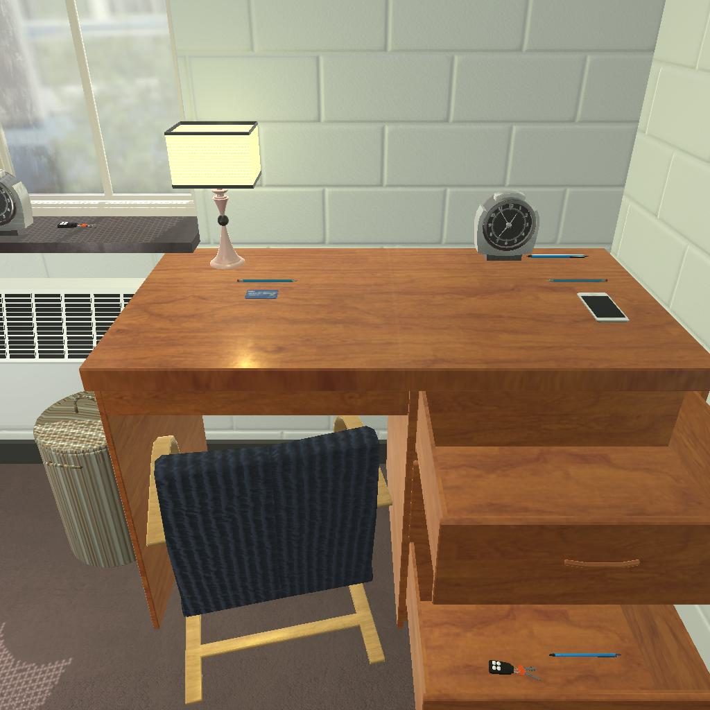

---------------------------------------------------------task: 8---------------------------------------------------------
--------------------------------------------------------------------------------------------------------------------------------------------------------------------
--------------------------------------------------------------------------------------------------------------------------------------------------------------------
Step:--------------------------------------------------------------------------19-------------------------------------------------------------------------------
----------------------------------------
VLM Prompt:
Image1:
Image2:
Image3:
**Instruction**
1. Analyze the provided images to identify all visible household objects and compare the difference between images (e.h. whether the object is opened or not and taken on hand or not), focusing on those relevant to the task description "put some laptop on desk."
2. Use the analysis of images and the task hint "The agent must find an object of the desired type, pick it up, find the correct location to place it, and put it down there." to answer the question: what is the most reasonable action in the choices for the task description "put some laptop on desk"?
3. Decide and write the answer using the template: The answer is: (i): , where i is the real number. If there is no desired object in images, search every place based on **Initial Observation** to find the object. And if no one is exactly correct, choose a similar answer.
**Initial Observation**
You are in the middle of a room. Looking quickly around you, you can see bed (1), garbagecan (1), desk (1), sidetable (1), drawer (1-5), laundryhamper (1)
**Answer Choices**
(1): go to bed 1
(2): go to garbagecan 1
(3): go to desk 1
(4): go to sidetable 1
(5): go to laundryhamper 1
(6): go to drawer 3
(7): go to drawer 4
(8): go to drawer 5
(9): open drawer 2
(10): close drawer 2
(11): take book 1 from drawer 2
(12): take cd 1 from drawer 2
(13): take pen 2 from drawer 2
(14): examine drawer 2
**Answer**
Let's think step by step by following the instructions.
----------------------------------------
----------------------------------------
Original Response:
Firstly, we analyze the provided images. In Image1, we can see a desk with various items on it, including a lamp, a clock, a pen, and a smartphone. There is also a chair in front of the desk and a trash can to the side. However, there is no laptop visible on the desk or nearby areas. In Image2 and Image3, we see a side table next to a door with a DVD and a book on top of it. The images are mirrored, showing a reflection of a bed with a stuffed animal on it, but again, there is no laptop visible in these images.
Given the task description "put some laptop on desk," we would need to find a laptop first. Since there is no laptop visible in the provided images, we must search every place based on the initial observation to find the object. The initial observation lists various locations such as a bed, garbage can, desk, side table, drawer, and laundry hamper.
From the answer choices, the ones that involve searching for objects are going to the various locations. Since the desk already does not have a laptop on it (as seen in Image1), we can eliminate choice (3). The garbage can (choice 2) and laundry hamper (choice 5) are unlikely places to find a laptop. The bed (choice 1) could potentially have a laptop, but it is not a typical place to store one when not in use. The side table in Image2 and Image3 does not have a laptop either, eliminating choice (4).
The remaining choices involve going to or interacting with drawers. Since laptops are often stored in drawers or cabinets when not in use, it is reasonable to start searching there. Choices (6), (7), and (8) involve going to various drawers, while choice (9) involves opening drawer 2, which is a specific action that could reveal hidden items inside the drawer.
Based on the analysis and the task hint, the most reasonable action to take would be to search the drawers for a laptop. Since we need to open the drawers to find out if there is a laptop inside, the most direct action related to the task description would be to open a drawer.
The answer is: (9): open drawer 2.
----------------------------------------
----------------------------------------
>>> Refine Original VLM Response and Get Pure Action: open drawer 2
----------------------------------------
-----------------------------------------------------------------
Running time: 18.14710307121277 seconds
Total Money: 4.091160000000001
-----------------------------------------------------------------
-----------------------------------------------------------------
Text Observation:Nothing happens.
-----------------------------------------------------------------
UNSUCCEED